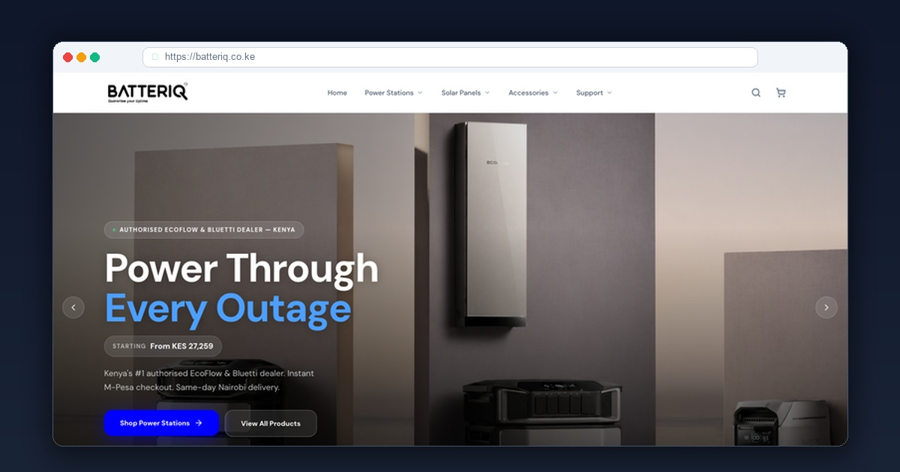

Nobody plans to buy a car battery. You discover you need one at 7:15 AM on a Monday morning when you turn the ignition key and hear only a pathetic clicking sound. You are late for a meeting, your car is dead, and you need a technician at your gate within 30 minutes.
When the team behind Batteriq engaged me at Xclusive Tech, their vision was bold: transform how automotive batteries are purchased in Nairobi. Rather than forcing motorists to seek out uncertified mechanics in downtown Kirinyaga Road, Batteriq brings genuine maintenance-free batteries directly to the stranded vehicle with free testing and installation.
⚡ Project Snapshot: Batteriq
1. High-Stress UX: Designing for Stranded Drivers
Emergency web design is completely different from recreational e-commerce:
- Cognitive Overload: When a motorist is stranded on the bypass or in an underground parking garage, they do not have patience for multi-page shopping carts.
- Battery Compatibility Confusion: Does a Toyota Harrier take a 55D23L or an 80D26L? Is a Mazda CX-5 an i-Stop Q85 EFB battery? Most drivers have no idea what battery code they need.
- Speed is Life: The platform must load in under 1 second on low battery and 3G cellular signals.
2. The Engineering Strategy: How I Built Batteriq
I engineered batteriq.co.ke around lightning speed and instant compatibility matching:
A. 2-Click Vehicle Make & Model Selector
I developed a fast JavaScript compatibility lookup where users simply choose their vehicle make (e.g., Toyota, Subaru, Mercedes-Benz, Nissan) and model. The platform immediately surfaces the exact recommended battery size, cold cranking amps (CCA), and warranty tier.
B. Instant WhatsApp Emergency Dispatch with GPS Pin Sharing
The primary call to action opens a dedicated WhatsApp hotline that prompts the motorist to share their live Google Maps location pin. A motorized motorbike technician carrying the pre-tested battery is dispatched immediately.
C. Old Battery Trade-In Rebate Calculation
To incentivize eco-friendly lead-acid recycling and lower upfront purchase prices, I built a scrap battery trade-in calculator that automatically knocks off up to KES 2,500 from the retail price when handing over the old scrap battery.
⚡ Commercial Results for Batteriq Nairobi
- • #1 Organic Search Visibility: Dominating Google search results for "car battery delivery Nairobi", "emergency car battery replacement", and "buy Chloride Exide battery Nairobi".
- • Average 26-Minute On-Site Arrival: Streamlined WhatsApp dispatch cut intake friction to under 60 seconds from tab opening to technician motorbike departure.
- • 99% First-Time Fit Accuracy: The compatibility engine completely eliminated incorrect battery deliveries across Nairobi.
Frequently Asked Questions
Why is mobile speed critical for roadside emergency services in Kenya?
When a driver is stranded on Mombasa Road, Thika Superhighway, or in an office parking lot with a dead car battery, they are stressed and using low-battery smartphones on mobile 4G networks. If your website takes 4 seconds to load, they will immediately tap the next phone number on Google. Sub-second speed directly equals cash flow.
How does vehicle make and model filtering prevent battery return issues?
Different cars require specific amperages, terminal polarities (DIN vs JIS), and Stop-Start AGM/EFB technologies. An interactive vehicle selector ensures the customer gets the exact matching battery, eliminating costly technician return trips across Nairobi.
How much does an on-demand emergency service website cost in Kenya?
At Xclusive Tech, custom on-demand emergency dispatch websites range between KES 35,000 and KES 65,000, including GPS location sharing, interactive product selectors, and automated WhatsApp/M-Pesa integrations.
Run an Emergency Dispatch, Auto Garage or Field Service in Kenya?
Let’s engineer a lightning-fast, high-converting digital platform that captures desperate customers right at the moment they need your urgent service.
About the Author: Samuel Kidemi Kisaga
Samuel is the Founder and Principal Web Architect at Xclusive Tech. With over 6 years of hands-on web engineering experience and 120+ client platforms delivered across Kenya, he specializes in building high-speed on-demand systems, automotive websites, and e-commerce platforms.